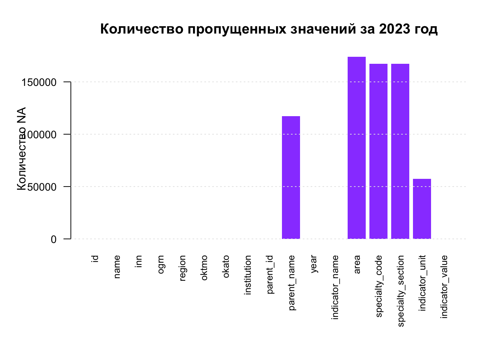
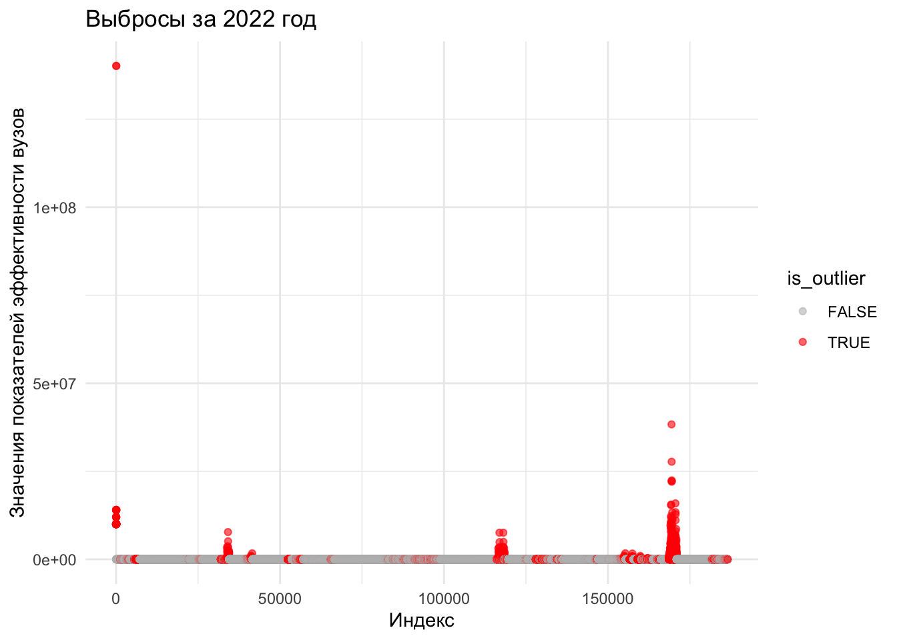
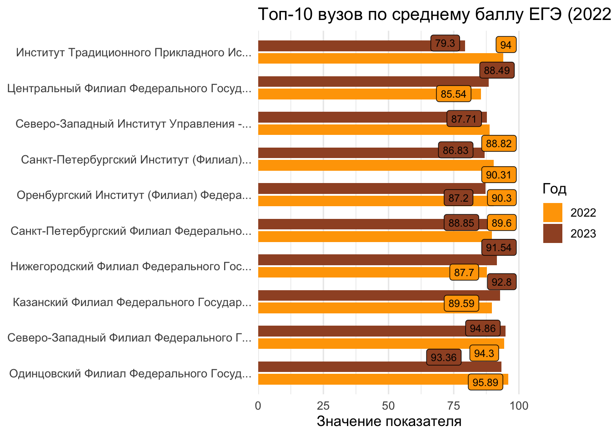
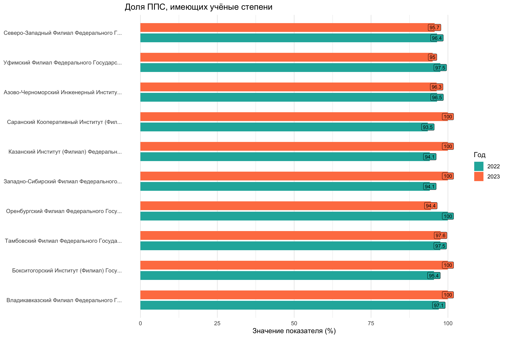
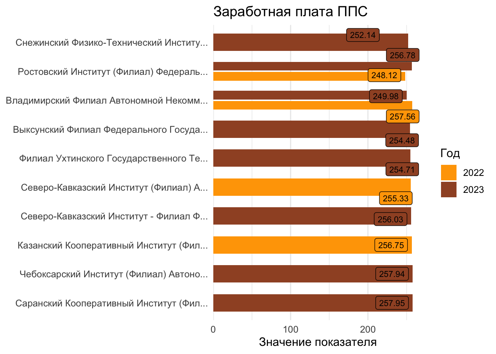
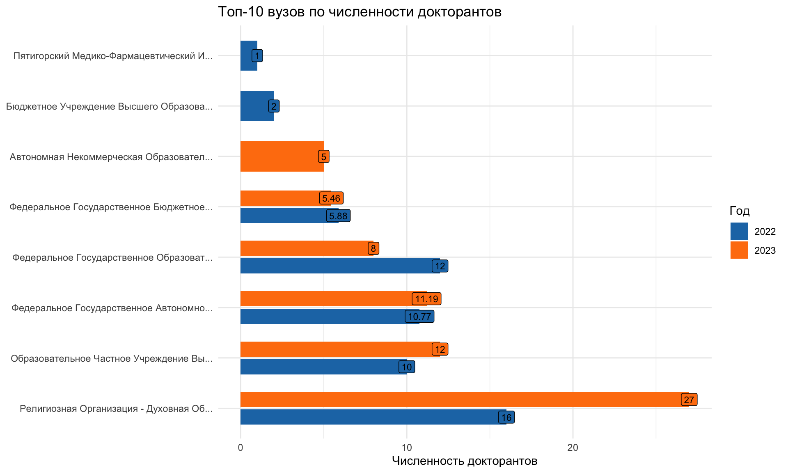
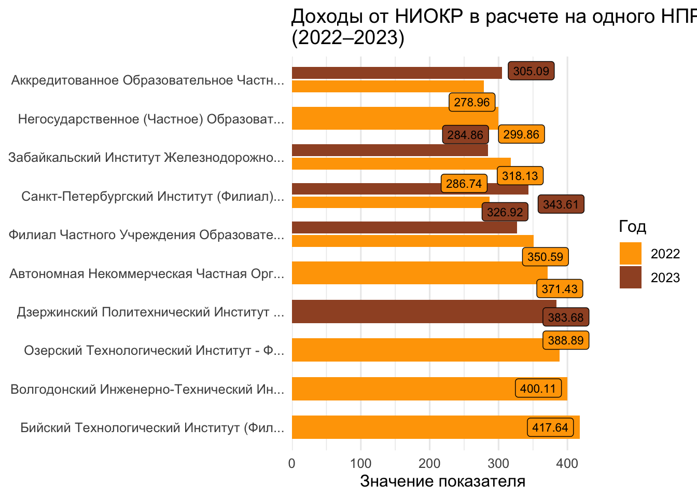

| name | region | year | indicator_name | indicator_value |
|---|---|---|---|---|
| ФЕДЕРАЛЬНОЕ ГОСУДАРСТВЕННОЕ БЮДЖЕТНОЕ ОБРАЗОВАТЕЛЬНОЕ УЧРЕЖДЕНИЕ ВЫСШЕГО ОБРАЗОВАНИЯ "АДЫГЕЙСКИЙ ГОСУДАРСТВЕННЫЙ УНИВЕРСИТЕТ" | Республика Адыгея | 2022 | Дата создания ЕГРЮЛ | 2002-04-25 |
| ФИЛИАЛ ФЕДЕРАЛЬНОГО ГОСУДАРСТВЕННОГО БЮДЖЕТНОГО ОБРАЗОВАТЕЛЬНОГО УЧРЕЖДЕНИЯ ВЫСШЕГО ОБРАЗОВАНИЯ "АДЫГЕЙСКИЙ ГОСУДАРСТВЕННЫЙ УНИВЕРСИТЕТ" В Г.БЕЛОРЕЧЕНСКЕ | Краснодарский край | 2022 | Дата создания ЕГРЮЛ | 2002-04-25 |
| БИЙСКИЙ ТЕХНОЛОГИЧЕСКИЙ ИНСТИТУТ (ФИЛИАЛ) ФЕДЕРАЛЬНОГО ГОСУДАРСТВЕННОГО БЮДЖЕТНОГО ОБРАЗОВАТЕЛЬНОГО УЧРЕЖДЕНИЯ ВЫСШЕГО ОБРАЗОВАНИЯ "АЛТАЙСКИЙ ГОСУДАРСТВЕННЫЙ ТЕХНИЧЕСКИЙ УНИВЕРСИТЕТ ИМ. И.И. ПОЛЗУНОВА" | Алтайский край | 2022 | Дата создания ЕГРЮЛ | 1993-12-27 |
Главная
Задачи проекта:
1) Загрузить и предобработать данные: привести данные к удобному формату для анализа.
2) Провести анализ данных: рассчитать базовые статистики и выполнить агрегацию по ключевым показателям.
3) Визуализировать данные: построить графики, помогающие выявить тенденции и особенности в данных.
4) Оформить результаты: представить анализ в виде веб-страницы.
Цель проекта:
Проанализировать эффективность российских вузов на основе данных за 2022 и 2023 годы. Основной задачей является выявление топ-10 вузов по различным ключевым показателям, представленным в данных.
Загрузка и предобработка данных
Ознакомимся с датасетом за 2022 и 2023 года
| name | region | year | indicator_name | indicator_value |
|---|---|---|---|---|
| ФЕДЕРАЛЬНОЕ ГОСУДАРСТВЕННОЕ БЮДЖЕТНОЕ ОБРАЗОВАТЕЛЬНОЕ УЧРЕЖДЕНИЕ ВЫСШЕГО ОБРАЗОВАНИЯ "АДЫГЕЙСКИЙ ГОСУДАРСТВЕННЫЙ УНИВЕРСИТЕТ" | Республика Адыгея | 2023 | Дата создания ЕГРЮЛ | 2002-04-25 |
| ФИЛИАЛ ФЕДЕРАЛЬНОГО ГОСУДАРСТВЕННОГО БЮДЖЕТНОГО ОБРАЗОВАТЕЛЬНОГО УЧРЕЖДЕНИЯ ВЫСШЕГО ОБРАЗОВАНИЯ "АДЫГЕЙСКИЙ ГОСУДАРСТВЕННЫЙ УНИВЕРСИТЕТ" В Г.БЕЛОРЕЧЕНСКЕ | Краснодарский край | 2023 | Дата создания ЕГРЮЛ | 2002-04-25 |
| БИЙСКИЙ ТЕХНОЛОГИЧЕСКИЙ ИНСТИТУТ (ФИЛИАЛ) ФЕДЕРАЛЬНОГО ГОСУДАРСТВЕННОГО БЮДЖЕТНОГО ОБРАЗОВАТЕЛЬНОГО УЧРЕЖДЕНИЯ ВЫСШЕГО ОБРАЗОВАНИЯ "АЛТАЙСКИЙ ГОСУДАРСТВЕННЫЙ ТЕХНИЧЕСКИЙ УНИВЕРСИТЕТ ИМ. И.И. ПОЛЗУНОВА" | Алтайский край | 2023 | Дата создания ЕГРЮЛ | 1993-12-27 |
Выведем столбчатые диаграммы для того, чтобы увидеть пропущенные значения в данных.


Видим, что за 2022 и 2023 года в Области образования, Код направления подготовки и Направление подготовки практически отсутствуют, а в Названии родительской организации и Единица измерения нету более половины значений.
Выделим ключевые переменные:
☕️ indicator_value и indicator_name
Приведем indicator_value к числовому типу и очистим пропуски в данных, где значения равны Na.
В ходе предварительного анализа переменной indicator_value, содержащей значения показателей эффективности вузов за 2022 и 2023 годы, были рассчитаны основные описательные статистики:
2022 год
Min. 1st Qu. Median Mean 3rd Qu. Max.
0 0 9 16868 91 140114315 25% 50% 75%
0.00 8.54 90.52 2023 год
Min. 1st Qu. Median Mean 3rd Qu. Max.
0 0 8 19848 91 140143853 25% 50% 75%
0.000 8.125 90.870 Интерпретация
Большинство значений показателя сосредоточено в интервале от 0-91, что видно по значениям квартилей.
Медиана слегка снизилась, что может указывать на снижение типичных значений показателя в 2023 году.
Среднее значение увеличилось — рост вызван влиянием единичных крайне высоких значений (выбросов).
Максимальные значения превышают 140 млн, что может указывать на аномальные наблюдения или иную шкалу для некоторых вузов/показателей.


На графиках видно, что большинство значений показателя indicator_value сосредоточены вблизи нуля, однако присутствуют отдельные наблюдения, значительно выбивающиеся вверх. Эти точки, выделенные красным и фиолетовым цветом, представляют собой выбросы, выявленные с помощью межквартильного размаха (IQR). Особенно заметны скопления выбросов в начале и конце диапазона индексов наблюдений.
Это говорит о наличии аномальных значений в данных, которые могут искажать результаты анализа или статистических моделей.
Построим графики Boxplot на основе следующих переменных:
- Средний ЕГЭ студентов, принятых по результатам ЕГЭ на обучение по очной форме по программам бакалавриата и специалитета за счет средств соответствующих бюджетов бюджетной системы РФ
- Доля ППС имеющих ученые степени
- Доходы от НИОКР (за исключением средств бюджетов бюджетной системы Российской Федерации, государственных фондов поддержки науки) в расчете на одного НПР.
- Общая численность докторантов
- Заработная плата ППС

Удалим выбросы на основе IQR — значения, выходящие за границы
Визуализация

Вывод:
В 2023 году наблюдается общий рост среднего балла ЕГЭ среди вузов-лидеров. Лидирующие позиции занимают крупные региональные и федеральные вузы с высокой конкуренцией. Особенно выделяются Одинцовский, Северо-Западный и Казанский филиалы, где прирост по сравнению с 2022 годом составляет от 3 до 5 баллов. Это может свидетельствовать о росте привлекательности и академического имиджа этих вузов.

Вывод:
Зарплаты преподавателей в топ-10 вузах сохраняются на стабильно высоком уровне с тенденцией к умеренному росту. Наибольшее увеличение произошло в Снежинском, Владимирском и Выксунском филиалах. Такая динамика может быть связана с внутренней политикой вузов по удержанию квалифицированных кадров, а также с региональными мерами поддержки научно-педагогических работников.

Вывод:
График позволяет выявить вузы, в которых доля преподавателей с учеными степенями составляет менее 100%, но при этом варьируется от 93 до 98%. Почти все представленные вузы за год либо сохранили уровень, либо незначительно его повысили. Это говорит о стабильности кадрового состава и отсутствии резких изменений в структуре профессорско-преподавательского состава. В некоторых вузах рост на 1–2% указывает на небольшое, но положительное движение в сторону академизации кадров.
📘 ППС — это категория сотрудников вуза, которая включает всех преподавателей, участвующих в образовательном процессе, а также, как правило, в научной и методической работе.

Вывод:
Количество докторантов — один из показателей научной активности вуза. Лидеры по этому показателю показывают разнонаправленную динамику: в одних вузах численность сократилась, в других — увеличилась. Особенно выделяется вуз, где число докторантов выросло с 16 до 27, что может быть связано с запуском новых программ докторантуры или привлечением новых кадров через грантовую поддержку. В целом, большинство значений остаются на уровне от 5 до 12 человек, что типично для вузов регионального уровня.

| name | year_2022 | year_2023 | growth |
|---|---|---|---|
| АВТОНОМНАЯ НЕКОММЕРЧЕСКАЯ ОРГАНИЗАЦИЯ ВЫСШЕГО ОБРАЗОВАНИЯ "ИНСТИТУТ КИНО И ТЕЛЕВИДЕНИЯ (ГИТР)" | 0.00 | 389.47 | 389.47 |
| СЕВЕРНЫЙ ИНСТИТУТ (ФИЛИАЛ) ФЕДЕРАЛЬНОГО ГОСУДАРСТВЕННОГО БЮДЖЕТНОГО ОБРАЗОВАТЕЛЬНОГО УЧРЕЖДЕНИЯ ВЫСШЕГО ОБРАЗОВАНИЯ "ВСЕРОССИЙСКИЙ ГОСУДАРСТВЕННЫЙ УНИВЕРСИТЕТ ЮСТИЦИИ (РПА МИНЮСТА РОССИИ)" В Г. ПЕТРОЗАВОДСКЕ | 68.16 | 409.29 | 341.13 |
| ЧАСТНОЕ УЧРЕЖДЕНИЕ ОБРАЗОВАТЕЛЬНАЯ ОРГАНИЗАЦИЯ ВЫСШЕГО ОБРАЗОВАНИЯ ИНСТИТУТ ЭКОНОМИКИ И КУЛЬТУРЫ | 0.00 | 281.48 | 281.48 |
| ФЕДЕРАЛЬНОЕ ГОСУДАРСТВЕННОЕ БЮДЖЕТНОЕ ОБРАЗОВАТЕЛЬНОЕ УЧРЕЖДЕНИЕ ВЫСШЕГО ОБРАЗОВАНИЯ "ВОРОНЕЖСКИЙ ГОСУДАРСТВЕННЫЙ УНИВЕРСИТЕТ ИНЖЕНЕРНЫХ ТЕХНОЛОГИЙ" | 125.29 | 382.44 | 257.15 |
| ФЕДЕРАЛЬНОЕ ГОСУДАРСТВЕННОЕ БЮДЖЕТНОЕ ОБРАЗОВАТЕЛЬНОЕ УЧРЕЖДЕНИЕ ВЫСШЕГО ОБРАЗОВАНИЯ "КАЛМЫЦКИЙ ГОСУДАРСТВЕННЫЙ УНИВЕРСИТЕТ ИМЕНИ Б.Б. ГОРОДОВИКОВА" | 141.21 | 384.41 | 243.20 |
| ФЕДЕРАЛЬНОЕ ГОСУДАРСТВЕННОЕ АВТОНОМНОЕ ОБРАЗОВАТЕЛЬНОЕ УЧРЕЖДЕНИЕ ВЫСШЕГО ОБРАЗОВАНИЯ "НОВОСИБИРСКИЙ НАЦИОНАЛЬНЫЙ ИССЛЕДОВАТЕЛЬСКИЙ ГОСУДАРСТВЕННЫЙ УНИВЕРСИТЕТ" | 185.11 | 414.37 | 229.26 |
| ФЕДЕРАЛЬНОЕ ГОСУДАРСТВЕННОЕ БЮДЖЕТНОЕ ОБРАЗОВАТЕЛЬНОЕ УЧРЕЖДЕНИЕ ВЫСШЕГО ОБРАЗОВАНИЯ "ГОСУДАРСТВЕННЫЙ ИНСТИТУТ РУССКОГО ЯЗЫКА ИМ. А.С. ПУШКИНА" | 36.94 | 259.33 | 222.39 |
| ОБРАЗОВАТЕЛЬНАЯ АВТОНОМНАЯ НЕКОММЕРЧЕСКАЯ ОРГАНИЗАЦИЯ ВЫСШЕГО ОБРАЗОВАНИЯ "ИНСТИТУТ ОБРАЗОВАТЕЛЬНЫХ ТЕХНОЛОГИЙ И ГУМАНИТАРНЫХ НАУК" | 111.44 | 330.07 | 218.63 |
| НОВОТРОИЦКИЙ ФИЛИАЛ ФЕДЕРАЛЬНОГО ГОСУДАРСТВЕННОГО АВТОНОМНОГО ОБРАЗОВАТЕЛЬНОГО УЧРЕЖДЕНИЯ ВЫСШЕГО ОБРАЗОВАНИЯ "НАЦИОНАЛЬНЫЙ ИССЛЕДОВАТЕЛЬСКИЙ ТЕХНОЛОГИЧЕСКИЙ УНИВЕРСИТЕТ МИСИС" | 160.04 | 372.12 | 212.08 |
| САМАРСКИЙ ФИЛИАЛ НЕГОСУДАРСТВЕННОГО ОБРАЗОВАТЕЛЬНОГО УЧРЕЖДЕНИЯ ВЫСШЕГО ПРОФЕССИОНАЛЬНОГО ОБРАЗОВАНИЯ "САНКТ-ПЕТЕРБУРГСКИЙ ГУМАНИТАРНЫЙ УНИВЕРСИТЕТ ПРОФСОЮЗОВ" | 126.14 | 319.34 | 193.20 |
Вывод:
Данный показатель ярко демонстрирует существенные различия между вузами. В топ-10 вошли вузы, показывающие уверенный рост доходов от научно-исследовательской деятельности. Особенно заметно увеличение в Озерском и Бийском институтах (до 400+ тыс. рублей в расчете на одного НПР), что указывает на высокую активность в научных проектах, участие в тендерах и грантах, а также на хорошее взаимодействие с промышленными партнёрами. Это может быть признаком эффективной научной инфраструктуры вуза и его коммерческой востребованности.
ИНОКР — Научно-исследовательские и опытно-конструкторские работы
НПР — Научно-педагогический работник
Общие выводы проекта
Анализ эффективности вузов РФ на основе данных за 2022 и 2023 годы показал:
- Вузовская система неоднородна: в то время как часть университетов стабильно демонстрирует высокие показатели, большая доля учреждений показывает низкие значения по ключевым метрикам.
- Лидеры устойчивы во времени — по каждому показателю состав топ-10 практически не изменяется.
- Доходы от НИОКР и зарплата ППС — показатели с наибольшей вариативностью, отражающие различия в институциональном развитии вузов.
- Качество приёма (средний балл ЕГЭ) остаётся важным индикатором престижности и уровня подготовки абитуриентов.
- Доля ППС с учеными степенями связана с научным профилем и академической репутацией.